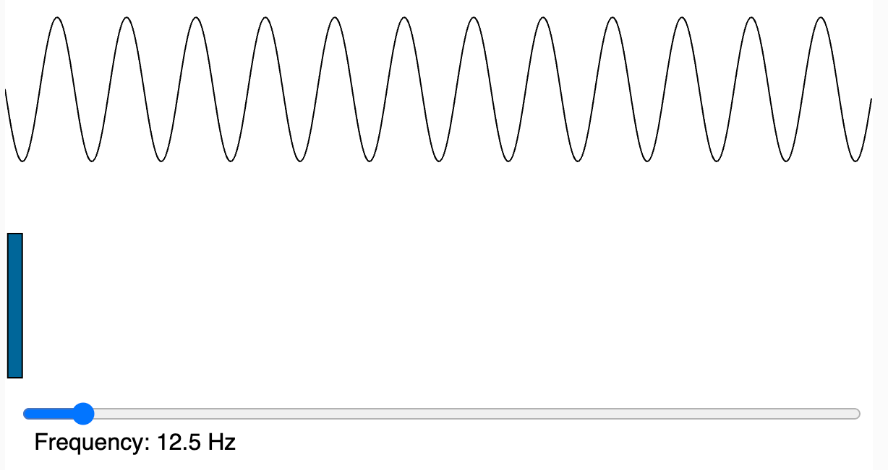

Decomposition for Signals & Systems Course

Course Description
Prompt
I am a college professor teaching an undergraduate
electrical engineering course called "Signals & Systems".
This class covers the basic techniques for analyzing
and designing signal processing, communications,
and control systems. Topics include time/frequency models,
Fourier-domain representations, modulation,
discrete-time/digital signal/system analysis,
Z transform, state models, stability, and feedback.
I recently found a tool that makes it very easy
to build interactive simulations where the users
can control the simulation parameters using buttons
and sliders. What are the most difficult topics
to explain in an undergraduate above?
Please list the possible simulations and order the
results based on the probability that I can create
an interactive simulation to explain the concept.
Chat GPT Response
Teaching an undergraduate course in "Signals & Systems" can indeed present some challenging topics that students often find difficult to grasp through traditional teaching methods alone. Interactive simulations can be a powerful tool to enhance understanding. Here are some topics that are typically challenging for students, along with ideas for simulations, ordered by the feasibility and effectiveness of creating an interactive simulation:
-
Fourier Transform and Frequency Domain Analysis:
- Simulation: Visualizing how different signals (sine waves, square waves, etc.) decompose into their frequency components. Interactive elements can include adjusting signal parameters (frequency, amplitude, phase) and observing the corresponding changes in the Fourier transform.
-
Z Transform and Discrete-Time Signal Analysis:
-
Simulation: Demonstrating the Z transform of basic discrete signals (such as unit step, impulse, or sinusoidal sequences). Allow students to manipulate the sequence parameters and observe how the Z-plane representation changes.
-
Modulation Techniques (AM, FM, PM):
-
Simulation: Showing how amplitude, frequency, and phase modulation work. Users can control the modulating signal and carrier signal parameters and see the resulting modulated signal in both time and frequency domains.
-
Sampling Theorem and Aliasing:
-
Simulation: Illustrating the effect of sampling at different rates on various signals. This could include showing how aliasing occurs when the sampling theorem is violated.
-
Stability in Control Systems:
-
Simulation: Exploring the stability of different systems by altering pole-zero placements in the s-plane. This would be particularly effective for understanding concepts like the Routh-Hurwitz criterion.
-
State Models and State-Space Analysis:
-
Simulation: Visualizing the state trajectory of a system in response to different initial conditions and inputs. This can help students grasp the concept of state variables and system dynamics.
-
Feedback and Control System Design:
-
Simulation: Allowing users to design a control system by selecting controller parameters and then observing system response (like step response or frequency response). This could include PID controller tuning.
-
Convolution and System Response to Inputs:
-
Simulation: Demonstrating convolution operation in both time and frequency domains. Students can input different signals and observe the resulting convolution output.
-
Laplace Transform and Its Applications:
-
Simulation: Visualizing the Laplace transform of various time-domain functions and understanding its application in system analysis, especially in solving differential equations.
-
Time-Frequency Representations (like Short-Time Fourier Transform):
-
Simulation: Showing how time-frequency representations change with different window sizes and types. This can help in understanding the trade-off between time and frequency resolution.
Interactive simulations in these areas can significantly enhance students' understanding by providing a tangible and visual way to explore abstract concepts. The order reflects a combination of the complexity of the concept, the visual effectiveness of a simulation, and the ease with which such a simulation can be implemented.
Prompt 2: FFT
1 2 3 | |
Prompt 2 Response
Creating a simulation for Fourier Transform and Frequency Domain Analysis focusing on the effect of frequency changes is an excellent way to introduce students to these concepts. Here's a suggested layout and functionality for the simulation:
Input Interface:
-
Frequency Slider: A slider that allows students to adjust the frequency of a sine wave. The slider should cover a range of frequencies, from very low to relatively high (e.g., 1 Hz to 1000 Hz), to demonstrate the wide range of effects frequency changes can have in the frequency domain.
-
Amplitude and Phase Sliders (Optional): While your primary focus is on frequency, including sliders for amplitude and phase can help students understand these aspects as well. However, if the goal is to keep the simulation simple, these can be omitted.
-
Play/Pause Button: To start and pause the sine wave generation. This allows students to analyze static frames if needed.
Output Display:
-
Time Domain Display (Top Half):
- Show a real-time graph of the sine wave.
- The x-axis represents time, and the y-axis represents amplitude.
- As the frequency is adjusted, the sine wave should update immediately to reflect the change.
-
Frequency Domain Display (Bottom Half):
-
Display the magnitude of the Fourier Transform of the sine wave.
- The x-axis should represent frequency, and the y-axis should represent magnitude.
- Ideally, this would show a spike at the frequency the sine wave is currently set to, clearly demonstrating the concept of frequency components.
- As the frequency of the sine wave changes, the spike in the frequency domain should move accordingly.
Additional Features:
- Informational Labels: Labels that display the current frequency, amplitude, and phase values.
- Gridlines and Scale Marks: Both graphs should have gridlines and scale marks for easier interpretation of the waveforms.
- Interactive Cursors or Hover Info: When students hover over points on the graphs, display coordinates or specific values to help them understand what they're seeing.
Educational Objective:
This setup allows students to concretely see how changes in the time domain (specifically frequency changes of a sine wave) are directly represented in the frequency domain. By keeping the interface simple and focused, students can clearly observe and internalize the fundamental relationship between time and frequency domains in signal processing.
Prompt 3
OK, that sounds like a good idea.
Please generate a p5.js sketch that does this.
Create a canvas that has canvasWidth=600 and canvasHeight=450.
Make the default text size 16.
Place a slider at the bottom of the canvas at height 430 to change the input frequency using a slider.
Create two charts.
The top chart is the time domain. Make it 150 high and the width of the canvas.
The top chart is a single sine wave that gets the frequency from the slider.
The bottom chart is from y=150 to y=300. It shows the frequency domain.
It shows a single spike according to the frequency of the slider.
Lower frequency is on the left. Higher frequency is on the right.
Make sure to add a label and value next to the slider.
Make sure the make the text fill black and disable the stroke before
the text.